AWS Lambda is a serverless computing platform that allows you to run code without provisioning or managing servers. It is a great way to run code without having to worry about the underlying infrastructure. It is also very cheap, and you only pay for the time your code is running.
If your workload is a simple script, you can use their inline editor to write your code. But if you want to use a custom binary, you need to package it into a zip file and upload it to AWS Lambda. This is a guide on how to do that.
In my example, I will upload a binary that I compiled from source. I will not be using the CLI and will be using the AWS Web Console instead.
Creating the Lambda Function
First create a Lambda function. I will be using the Amazon Linux 2 runtime. I will also be using the default execution role.
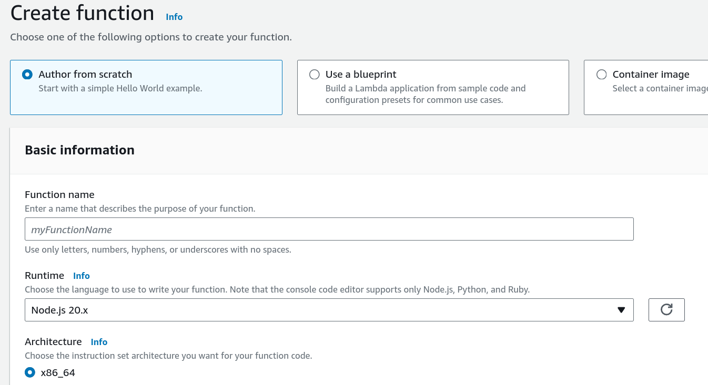
Select Amazon Linux 2
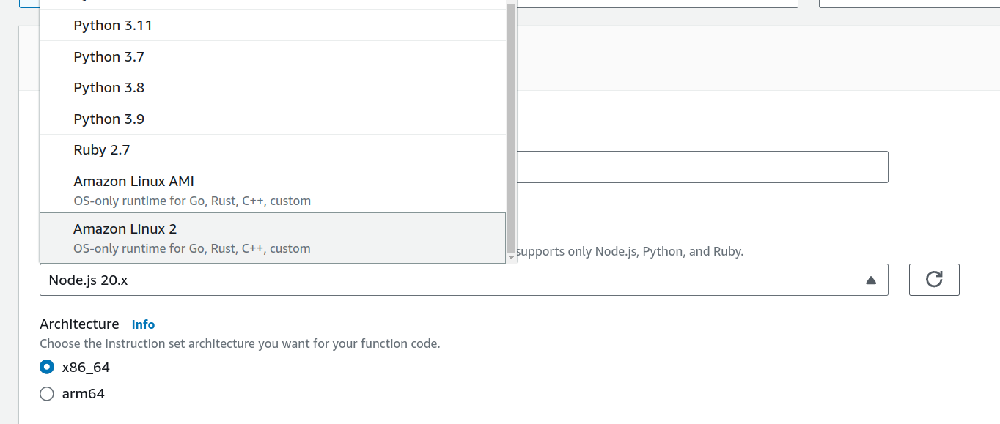
We will now be uploading a bootstrap file in the next section
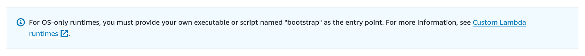
When the function has finished creating, the Code dashboard will look like this
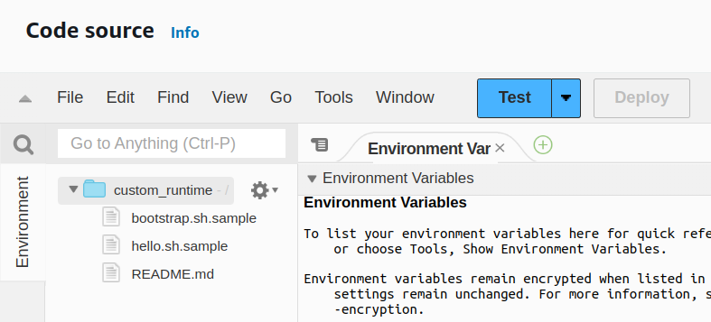
The README.md file reads
A runtime is a program that runs a Lambda function's handler method when the function is invoked. The runtime can be included in your function's deployment package, or in a [layer](https://docs.aws.amazon.com/lambda/latest/dg/configuration-layers.html). [Learn more](https://docs.aws.amazon.com/lambda/latest/dg/runtimes-custom.html) about custom Lambda runtimes.
For reference, this function includes a sample [Bash](https://www.gnu.org/software/bash/) runtime in `bootstrap.sample` and a corresponding handler file `hello.sh.sample`. As a next step, you should provide your own bootstrap by either adding a layer implementing a custom runtime or including a `bootstrap` file in this function's deployment package.
We may be tempted to just rename the function bootstrap.sample to bootstrap and the function hello.sh.sample to hello.sh.
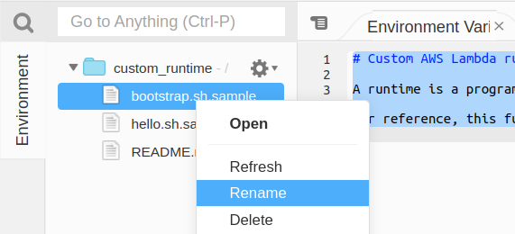
Then create a new test event and run it.
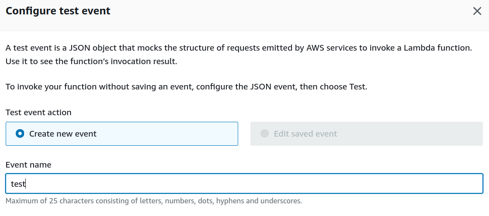
We should see a successful test.
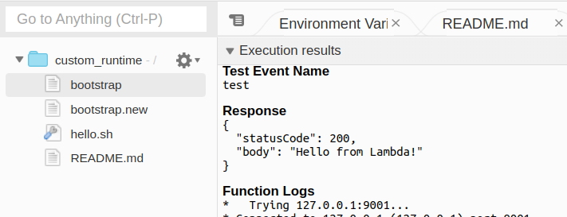
Common Error: Creating a new file instead of renaming
If you create a new file instead of renaming, you will see this error
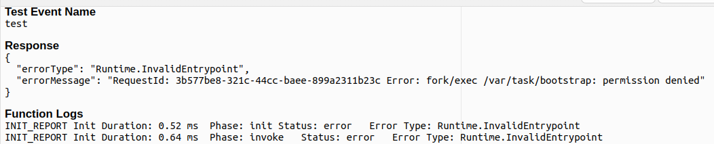
Common Error: Not deploying the function
After you make changes to the files (including renaming), you need to deploy the function. Otherwise the old files will still be used. And they will say they cannot find the bootstrap file.
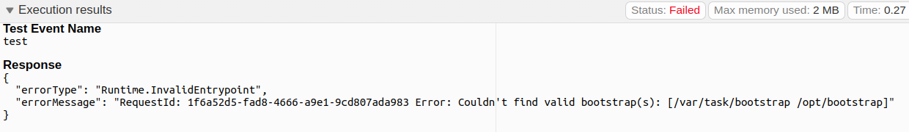
Common Error: I accidentally deleted the bootstrap file
If you accidentally deleted the old bootstrap.sh.sample file, and now you can’t create one that has executable permissions, you must do the following
cat > bootstrap << EOF
#!/bin/sh
set -euo pipefail
# Handler format: <script_name>.<bash_function_name>
#
# The script file <script_name>.sh must be located at the root of your
# function's deployment package, alongside this bootstrap executable.
source $(dirname "$0")/"$(echo $_HANDLER | cut -d. -f1).sh"
while true
do
# Request the next event from the Lambda runtime
HEADERS="$(mktemp)"
EVENT_DATA=$(curl -v -sS -LD "$HEADERS" -X GET "http://${AWS_LAMBDA_RUNTIME_API}/2018-06-01/runtime/invocation/next")
INVOCATION_ID=$(grep -Fi Lambda-Runtime-Aws-Request-Id "$HEADERS" | tr -d '[:space:]' | cut -d: -f2)
# Execute the handler function from the script
RESPONSE=$($(echo "$_HANDLER" | cut -d. -f2) "$EVENT_DATA")
# Send the response to Lambda runtime
curl -v -sS -X POST "http://${AWS_LAMBDA_RUNTIME_API}/2018-06-01/runtime/invocation/$INVOCATION_ID/response" -d "$RESPONSE"
done
EOF
cat > hello.sh << EOF
function handler () {
EVENT_DATA=$1
RESPONSE="{\"statusCode\": 200, \"body\": \"Hello from Lambda!\"}"
echo $RESPONSE
}
EOF
Change the permissions
chmod +x bootstrap
chmod +x hello.sh
Then zip it up and upload it
zip my_bootstrap.zip bootstrap hello.sh
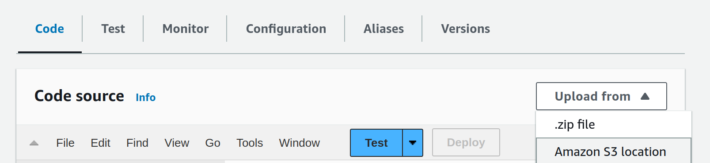 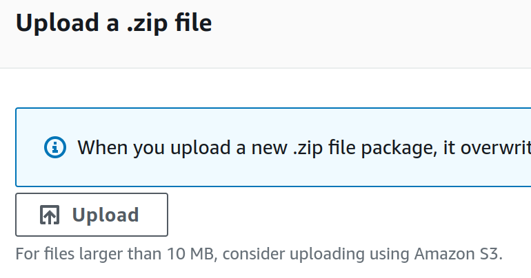 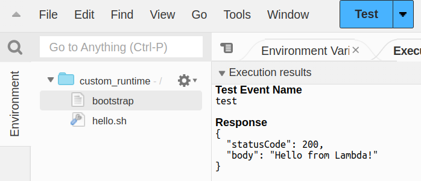
Custom Binary
Do note that whatever scripts or binaries you want to run, you need to compile it on the same OS as the Lambda runtime. In this case, it is Amazon Linux 2. So I will be using a Docker container to compile my binary.
Docker Container
First setup our build environment. By looking at our runtime image, we can refer to the docs to find the Dockerfile for the image.
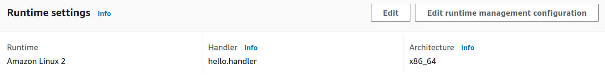
Which we can find the image for here
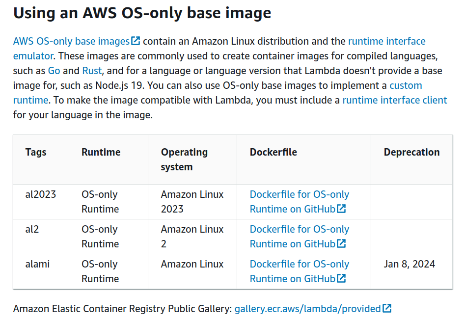
We go ahead and clone the repo
git clone --branch provided.al2 --depth 1 https://github.com/aws/aws-lambda-base-images.git
cd aws-lambda-base-images
# either of the following
sed -i 's/scratch/public.ecr.aws\/lambda\/nodejs:18/g' Dockerfile.provided.al2
sed -i 's/scratch/amazonlinux:2/g' Dockerfile.provided.al2
docker build -f Dockerfile.provided.al2 -t lambda_image:1.0.0 .
We had to replace the FROM scratch with FROM public.ecr.aws/lambda/nodejs:18 because we want to docker exec into the container later and have a nice shell, and scratch does not have a shell. Also because it seems like we can’t run /lambda-entrypoint.sh the scratch image (either this is bug in Amazon’s GitHub, or Lambda loads containers differently from our local Docker runc).
Creating our image
Then we can run our build environment
docker run -d -v $PWD:/tmp/meow --name lambda_image lambda_image:1.0.0
docker exec -it lambda_image bash
Writing our binary
Install build environment in the interative shell
yum install -y gcc-c++ vim
Or you could bake it into the image by adding it to the Dockerfile
Compiling our binary
Then we can write a simple C++ program
cat > test.cpp << EOF
#include <stdio.h>
int main(){
printf("Hello, world!\n");
}
EOF
And compile it
g++ test.cpp -o my_binary
cp my_binary /tmp/meow
Exit the container and zip it up
chmod +x my_binary
zip my_binary.zip my_binary
Uploading our binary
Then we can upload it to our Lambda function
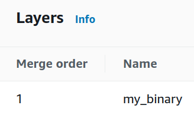
We use hello.sh to make sure it works
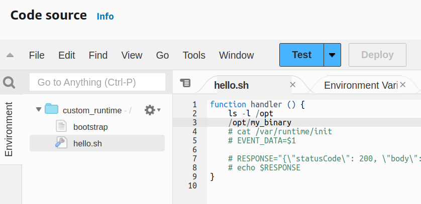
The output is
total 8
-rwxr-xr-x 1 root root 8176 Dec 27 18:01 my_binary
Hello, world!
Extra: Understanding AWS Lambda Runtime
Nice that you are here at the end! Let’s have some fun and dig deep into AWS Lambda.
docker exec -it --entrypoint bash lambda_image:1.0.0
cat /lambda-entrypoint.sh
We see that
#!/bin/sh
# Copyright 2020 Amazon.com, Inc. or its affiliates. All Rights Reserved.
if [ $# -ne 1 ]; then
echo "entrypoint requires the handler name to be the first argument" 1>&2
exit 142
fi
export _HANDLER="$1"
RUNTIME_ENTRYPOINT=/var/runtime/bootstrap
if [ -z "${AWS_LAMBDA_RUNTIME_API}" ]; then
exec /usr/local/bin/aws-lambda-rie $RUNTIME_ENTRYPOINT
else
exec $RUNTIME_ENTRYPOINT
fi
Curiously,
cat /usr/local/bin/aws-lambda-rie # binary file garbage
cat /var/runtime/bootstrap
We see
#!/bin/sh
# Copyright 2019 Amazon.com, Inc. or its affiliates. All Rights Reserved.
if [ -z "$NODE_PATH" ]; then
nodejs_mods="/opt/nodejs/node_modules"
nodejs18_mods="/opt/nodejs/node18/node_modules"
runtime_mods="/var/runtime/node_modules"
task="/var/runtime:/var/task"
export NODE_PATH="$nodejs18_mods:$nodejs_mods:$runtime_mods:$task"
fi
if [ -n "$AWS_LAMBDA_FUNCTION_MEMORY_SIZE" ]; then
new_space=$(expr $AWS_LAMBDA_FUNCTION_MEMORY_SIZE / 10)
semi_space=$(expr $new_space / 2)
old_space=$(expr $AWS_LAMBDA_FUNCTION_MEMORY_SIZE - $new_space)
MEMORY_ARGS=(
"--max-semi-space-size=$semi_space"
"--max-old-space-size=$old_space"
)
fi
# If NODE_EXTRA_CA_CERTS is being set by the customer, don't override. Else, include RDS CA
if [ -z "${NODE_EXTRA_CA_CERTS+set}" ]; then
# Use the default CA bundle in CN regions and regions that have 3 dashes in their name
if [ "${AWS_REGION:0:3}" == "cn-" ] || [ "${AWS_REGION//[^-]}" == "---" ]; then
export NODE_EXTRA_CA_CERTS=/etc/pki/tls/certs/ca-bundle.crt
else
# /var/runtime/ca-cert.pem contains all certs in "/etc/pki/tls/certs/ca-bundle.crt" that
# are not already embedded in the node binary.
export NODE_EXTRA_CA_CERTS=/var/runtime/ca-cert.pem
fi
fi
export AWS_EXECUTION_ENV=AWS_Lambda_nodejs18.x
NODE_ARGS=(
--expose-gc
--max-http-header-size 81920
"${MEMORY_ARGS[@]}"
/var/runtime/index.mjs
)
if [ -z "$AWS_LAMBDA_EXEC_WRAPPER" ]; then
exec /var/lang/bin/node "${NODE_ARGS[@]}"
else
wrapper="$AWS_LAMBDA_EXEC_WRAPPER"
if [ ! -f "$wrapper" ]; then
echo "$wrapper: does not exist"
exit 127
fi
if [ ! -x "$wrapper" ]; then
echo "$wrapper: is not an executable"
exit 126
fi
exec -- "$wrapper" /var/lang/bin/node "${NODE_ARGS[@]}"
fi
It seems to be invoking nodejs. I wonder if other images will have different bootstrap files. Let’s go to the Amazon Lambda console and use hello.sh to probe around.
With my hello.sh file as
function handler () {
ls -l /var/runtime
}
I get a funny result that
total 9852
-rwxr-xr-x 1 root root 10085351 Oct 19 17:20 init
I tried to cat it but it timed out (since it’s 10Mb afterall).
Where is layers uploaded to?
AWS Lambda Layers are uploaded to /opt in the container. We can verify this by creating a layer and uploading it to our function.
echo "meow" > test.txt
zip test.zip test.txt
Then after uploading, we can use hello.sh to again probe around.
function handler () {
ls -l /opt
}
and we see
total 1
-rwxr-xr-x 1 root root 5 Dec 27 17:37 test.txt
Now what if we wanted to upload it to a different path? Idk
Environment variables
I used env in hello.sh to see the environment variables. I redacted some of the values.
AWS_LAMBDA_FUNCTION_VERSION=$LATEST
AWS_SESSION_TOKEN=REDACTED
LAMBDA_TASK_ROOT=/var/task
AWS_LAMBDA_LOG_GROUP_NAME=/aws/lambda/custom_runtime
LD_LIBRARY_PATH=/lib64:/usr/lib64:/var/runtime:/var/runtime/lib:/var/task:/var/task/lib:/opt/lib
AWS_LAMBDA_RUNTIME_API=127.0.0.1:9001
AWS_LAMBDA_LOG_STREAM_NAME=2023/12/27/[$LATEST]REDACTED_UUID
AWS_LAMBDA_FUNCTION_NAME=custom_runtime
AWS_XRAY_DAEMON_ADDRESS=REDACTED_IPV4_ADDRESS:2000
PATH=/usr/local/bin:/usr/bin/:/bin:/opt/bin
AWS_DEFAULT_REGION=us-east-1
PWD=/var/task
AWS_SECRET_ACCESS_KEY=REDACTED
LANG=en_US.UTF-8
LAMBDA_RUNTIME_DIR=/var/runtime
AWS_LAMBDA_INITIALIZATION_TYPE=on-demand
TZ=:UTC
AWS_REGION=us-east-1
AWS_ACCESS_KEY_ID=REDACTED
SHLVL=1
_AWS_XRAY_DAEMON_ADDRESS=REDACTED_IPV4_ADDRESS
_AWS_XRAY_DAEMON_PORT=2000
AWS_XRAY_CONTEXT_MISSING=LOG_ERROR
_HANDLER=hello.handler
AWS_LAMBDA_FUNCTION_MEMORY_SIZE=128
_=/usr/bin/env